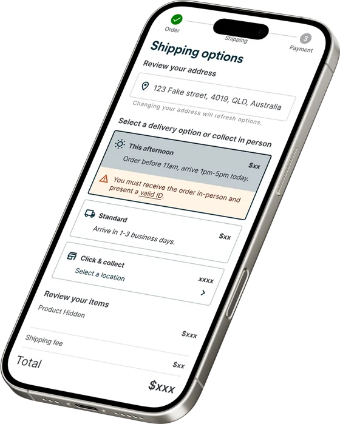
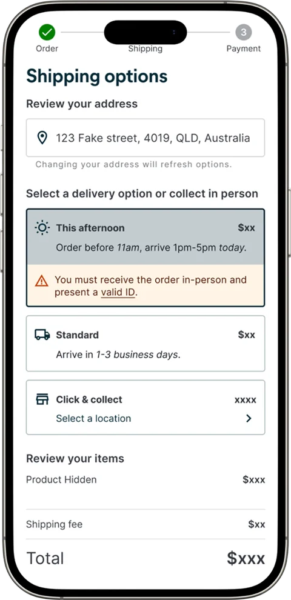
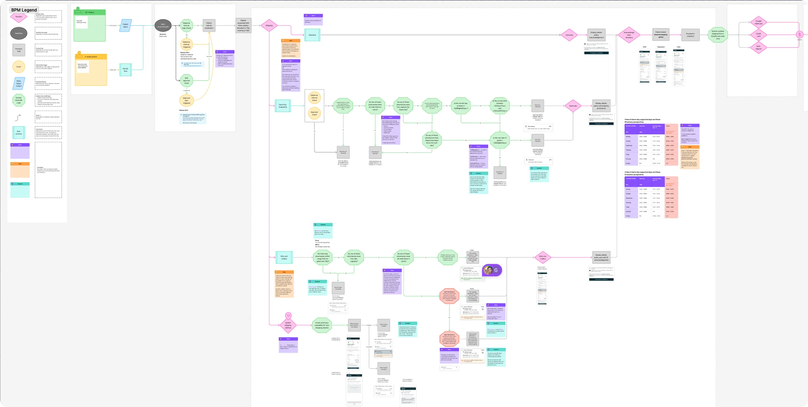

Case study · Health tech · B2C ecommerce · uMeds multi shipping options
Patients kept walking out the door. We gave them a reason to stay.
uMeds delivers medication to patients across Australia. Every month, around a thousand of them asked to take their script elsewhere. This is why, what we built about it, and the honest result: a 19% drop in patient-initiated churn, an estimated $13.7M a year protected, and two launch targets we missed.
0 m Surface The short version
Patients were leaving because standard delivery did not fit how they wanted their medication. We gave them more ways to receive it.
It missed both launch targets as written, yet cut patient-initiated churn 19% and protected an estimated $13.7M a year in a declining market. Size the market before you set the metric.
0–200 m Epipelagic · Sunlight Before
Every month, about 1,050 patients asked to leave.
When a patient requests a script release, they take their prescription to a pharmacy themselves instead of ordering through uMeds. We were not guessing why. Patients told us, in two datasets.
Why patients requested a script release
Source 4 · Survicate discharge survey, script-release reasons. Bars scaled to the top answer; respondents could select more than one.
What shipping options patients actually wanted
Source 5 · Google Looker, uMeds Post Delivery NPS, CSat and Awaiting Collection / Delivery Attempted.
59% wanted to pick up in person. The demand was specific: same-day (4,360), weekend (3,469), 3-hour (2,067) and click-and-collect (1,984). Doing nothing meant keeping the leak open.
After Imagine the alternative
A patient notices their medication is running low. They open uMeds and, for the first time, they actually have a choice.
Same-day if it is urgent, collect it nearby, or pick a day that suits them. The reason to walk out the door is gone.
That is the world we were designing toward. Not a faster version of the old experience, but a different one, where how the medication arrives bends to the patient instead of the other way around.

200–1,000 m Mesopelagic · Twilight Bridge
First understand the patient, then design for trust, not just speed.
I ran moderated, task-based usability sessions with seven patients on a prototype of the new shipping experience. The sample leans rural, the group with the most to gain and the least margin for a failed delivery.
Source 6 · Q2 2025 Shipping Options: Data and Insights (FigJam), 7 de-identified participants.
The scorecard told me where the design would struggle
Select a shipping option
Finds the section, reads each option, picks the one that matches intent.
Confirm availability and present valid ID
A patient questioned a valid-ID banner on a standard express order.
Understand availability based on location
Could not tell which options were available or unavailable, with drop-off risk.
“I'd rather unavailable options just disappear than sit there greyed out.”
“Why is it asking me for valid ID? I only picked standard express.”
The three ideas that shaped the design
Make availability legible
Greyed-out options read as noise. Patients need to see what their address actually supports, or a faster option silently disappears.
Match trust cues to the choice
An ID banner on a standard order broke trust. Verification messaging has to be conditional on the option chosen.
Design for control, not just speed
Rural patients rank speed below value and reliability. The win is choice, not raw velocity.

The screen those ideas became
Choice up front
Same-day, standard and collect sit side by side, each leading with price and a plain-language ETA.
Conditional trust
The valid-ID acknowledgement appears only on the option that needs it.
Honest availability
The biggest open problem from testing. Unavailable options must read as unavailable, not greyed out.
1,000–4,000 m Bathypelagic · Midnight Cross-functional delivery
Choosing “Same Day” looks like a single tap. Underneath it is a chain of real-world handoffs.
No light reaches this part of the product. A tap triggers a tightly timed, regulated sequence, and no single team owns it end to end, which is exactly where it can break.
Serviceability check
Does this address support a same-day route at all, right now.
DeliveryScript and ID compliance
Regulated checks clear before anything can be dispensed.
Pharmacy opsDispense within cut-off
The window is the promise. Miss it and the option was never real.
Pharmacy opsPick and pack
Live stock, cold-chain handling, packing constraints per item.
FulfilmentCourier collection
A physical handoff on a clock set hours earlier in checkout.
DeliverySame-day route
Routing, re-attempts and exceptions the patient never sees.
DeliveryStatus message back
What the patient is told, and when, decides whether it felt same-day.
Marketing commsBefore a pixel was finalised I ran a cross-functional mapping workshop with Fulfilment, Pharmacy Operations, Delivery, Engineering, Data and Marketing Comms. The goal was deliberately not “review my designs”. It was one shared map of the operation, so every scenario, edge case, risk and dependency had a named owner, and so the decisions in checkout reflected what operations could actually honour.

Scenarios and risks the workshop put on the table
Mapping the operation together surfaced the cross-cutting scenarios a checkout mock alone would never expose. Each one got an owner and a fallback instead of becoming a live incident.
Cut-off missed
Order placed after the same-day dispatch window. Who downgrades the option, and how is the patient told before they pay?
Out-of-zone after address change
A faster option silently drops when the address updates. Engineering recompute plus a visible message, owned jointly.
Script not yet released
Pharmacy cannot dispense until the script clears. Comms holds the SMS rather than promising a window that cannot be met.
Stock mismatch
Online availability disagrees with the shelf. Fulfilment feeds live stock into eligibility so same-day never shows for an item that is not there.
Cold-chain item
Temperature-sensitive products constrain packing and carrier. Flagged at eligibility, not discovered at pick.
Failed delivery or re-attempt
Re-attempt logic, PTX follow-up and proactive comms agreed up front, so a missed drop does not read to the patient as a lost order.
I treat what happens after handoff as part of the design. Aligning six teams on one map is what turned a clean shipping options flow into a promise the product team could keep. It is also where the eligible-market blind spot behind Target 1 first became visible.
4,000–6,000 m Abyssopelagic · Pressure What we shipped
More ways to receive medication. Two missed targets. One real win.
Same Day Delivery launched in November 2025, with Click & Collect following in March 2026. Against the two launch targets the literal numbers are a miss. Against the thing that mattered, retention, it is a clear win.
MissedTarget 1: 25% SDD conversion
Result: 8.5% by May 2026, peaking at 10.8% in Feb.
- The 25% was set against all orders, before sizing how many were even same-day eligible.
- Greyed-out options were unreadable, so eligible patients sometimes missed same-day.
MissedTarget 2: +1.5% total order uplift
Result: −6.6% market-wide. The no-SDD control fell −19.3% like-for-like, while SDD adopters held at +0.6%, beating the market by about 15 points.
The targets measured new growth. What same-day actually delivered was retention.
SDD adoption vs the 25% target
Sources 1 and 2 · Measured on all orders, adoption peaked at 10.8%. On same-day eligible postcodes it tracks near the 25% target.
Patient-initiated churn
A 19% fall in the monthly average after same-day launched, in a market where the no-SDD control group fell 19.3% in orders like-for-like.
Revenue per customer, 30 days
Patient-initiated churn, 1,050 to 847 a month
Extra revenue per multi-modal customer per month vs control
Hard-churn rate for multi-modal (S2), against 0.66% baseline
Annualised net impact estimate vs counterfactual
Sources 1 to 3 · Same-day adoption is self-selected, so this is correlation, not proven causation. Figures 30-day normalised against an S3 counterfactual.
6,000 m + Hadal · Ascent So what
A success metric is only as good as the market definition under it.
Recalibrate the target
Re-base same-day conversion on same-day eligible orders, not all orders.
Fix availability legibility
Remove or clearly explain unavailable options instead of greying them out.
Make option changes loud
When an address change drops a faster option, say so.
Lead with retention
Frame same-day around churn protection and multi-modal value, not raw adoption.
10,994 m Seabed References
- SDD Portfolio Snapshot, Montu Product Analytics, 12 Jun 2026.
- SDD Impact Tracker, 12 Jun 2026.
- SDD Churn Infographic.
- Survicate discharge survey, script-release reasons.
- Google Looker, uMeds Post Delivery NPS, CSat and Awaiting Collection / Delivery Attempted.
- Q2 2025 Shipping Options: Data and Insights (FigJam), 7 de-identified participants.
Internal Montu sources. Figures shown as reported in those documents. Product names masked in the design screens.
↑ Return to the surface